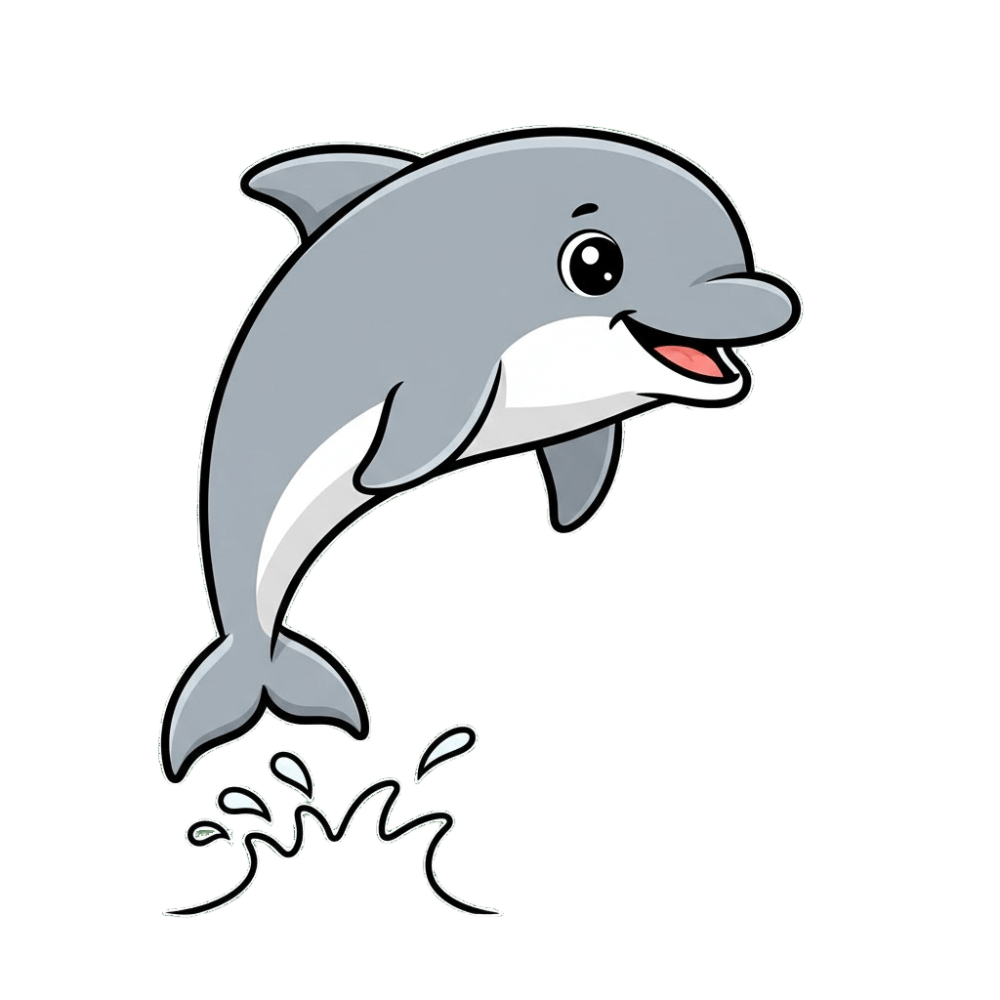
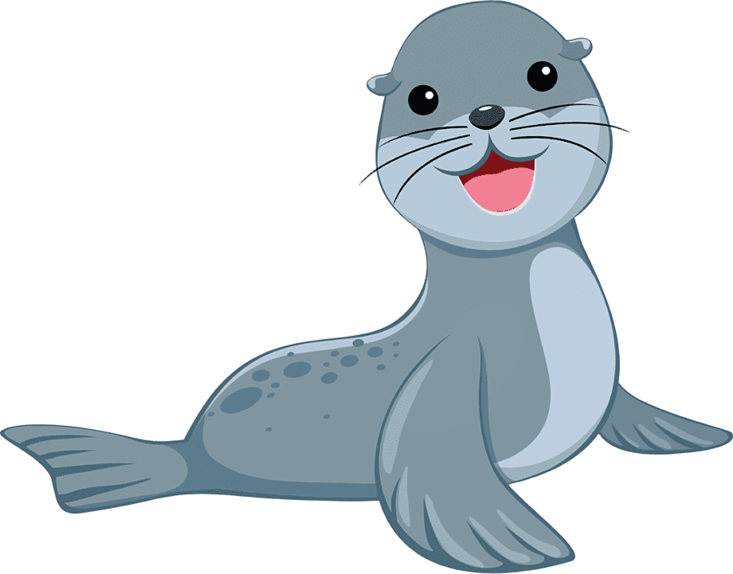
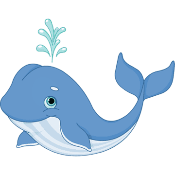
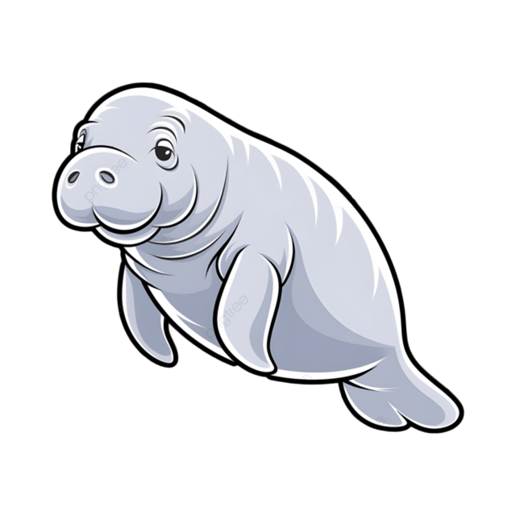
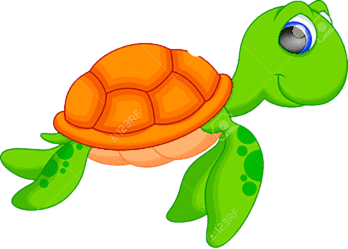
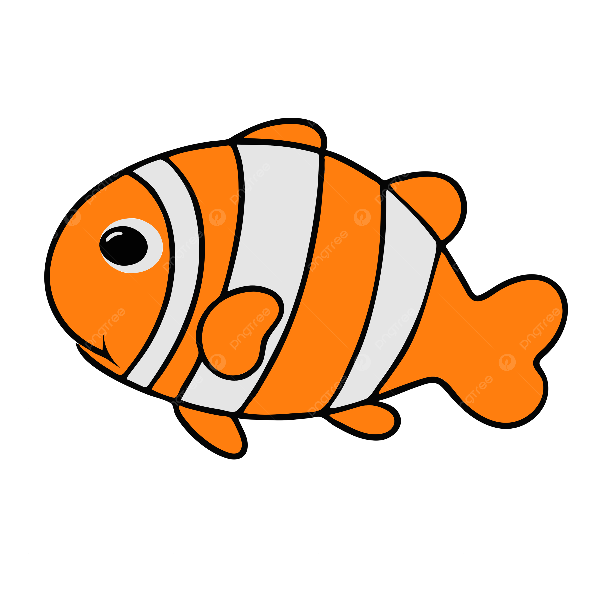
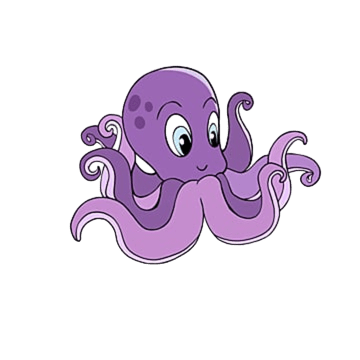
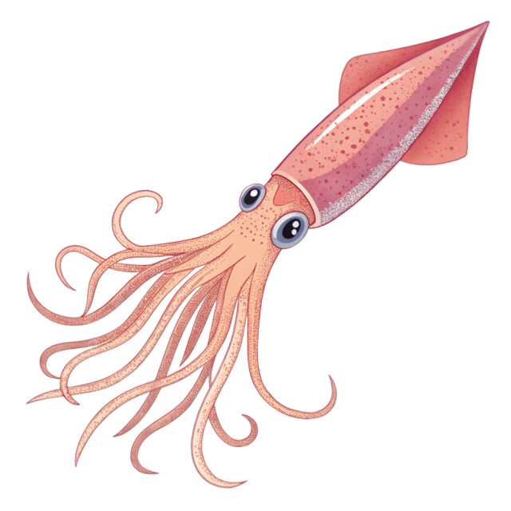
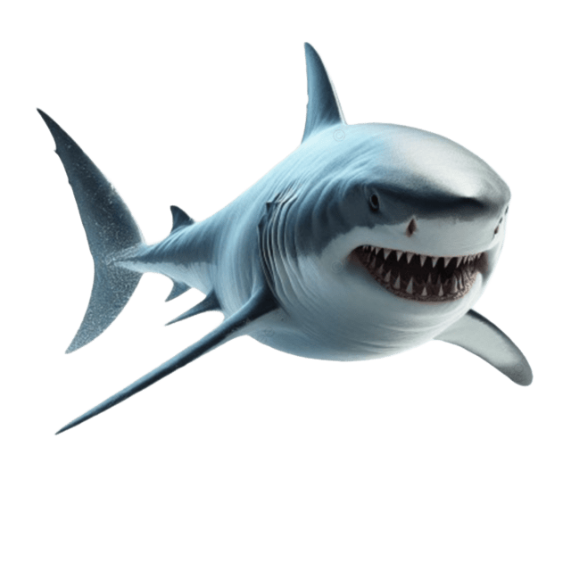

Delfín (Mamífero)
El delfín es uno de los animales más inteligentes del mar. Siempre están sonriendo y les encanta saltar y jugar en las olas. Usan sonidos especiales para hablar entre ellos y encontrar sus peces favoritos.
Foca (Mamífero)
La foca es un animal muy ágil en el agua, donde usa sus aletas para nadar rápido. Pero también le gusta salir a la tierra o al hielo para tomar el sol y descansar. ¡Parecen salchichas gorditas con bigotes!
Ballena (Mamífero)
La ballena es el animal más grande del mundo. Vive toda su vida en el mar y, aunque parece un pez, es un mamífero: respira aire por un agujero en la cabeza (el espiráculo) y es muy buena nadadora en el océano.
Leon Marino (Mamífero)

Un primo de la foca que tiene orejas pequeñas. Son muy ruidosos y les encanta hacer malabares con pelotas si los entrenan.
Manatí (Mamífero)
A veces se les llama "vacas marinas" porque son lentos y solo comen plantas del mar. Son muy gentiles y tienen una cola grande y redonda.
Oso Polar (Mamífero)

Aunque pasa tiempo en la tierra, es un mamífero marino porque necesita el hielo y el mar para cazar y sobrevivir.
Nutria Marina (Mamífero)

Pasa mucho tiempo flotando de espaldas en el agua, a veces con sus amigos, y usa piedritas para abrir los mariscos que come
Tortuga Marina (Oviparo)
La tortuga marina nada por todo el océano, pero cuando es hora de tener a sus bebés, viaja a la playa. Hace un agujero en la arena con sus aletas y pone muchos huevos redondos, luego los tapa y vuelve al mar.
Pez Payaso (Oviparo)
Este pez pequeño y de colores naranja y blanco brillante vive dentro de una planta marina venenosa llamada anémona. ¡Pero a él no le hace daño! Es su casa segura y pone sus huevos cerca de ella.
Pingüino (Oviparo)

El pingüino es un ave que no puede volar, ¡pero es un campeón nadando! Pone sus huevos en la tierra o el hielo, y a menudo, el papá pingüino es el encargado de cuidar el huevo y mantenerlo calentito entre sus patas hasta que nace la cría.
Pulpo (Oviparo)
El pulpo es un animal con ocho brazos (llamados tentáculos) que usa para moverse y atrapar comida. Es muy listo y puede cambiar de color para esconderse. La mamá pulpo cuida sus huevos con mucho amor hasta que nacen los bebés
Calamar (Oviparo)
Un familiar del pulpo que es muy rápido y tiene diez brazos (ocho cortos y dos largos). Pone grandes grupos de huevos que a veces parecen racimos de uvas.
Tiburón (Oviparo)
Este pez pequeño y de colores naranja y blanco brillante vive dentro de una planta marina venenosa llamada anémona. ¡Pero a él no le hace daño! Es su casa segura y pone sus huevos cerca de ella.
Estrella de Mar (Oviparo)

Este animal tiene forma de estrella y se mueve muy lento. Su forma de tener bebés es poniendo sus huevos directamente en el agua, donde crecen solos.